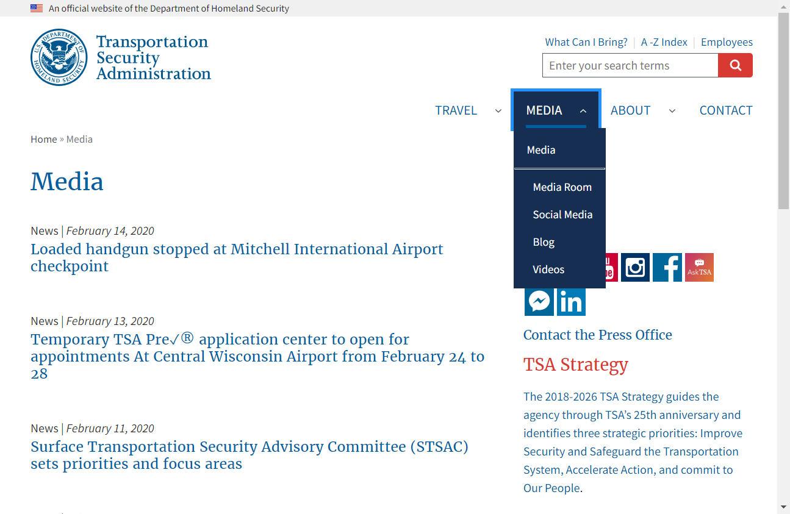
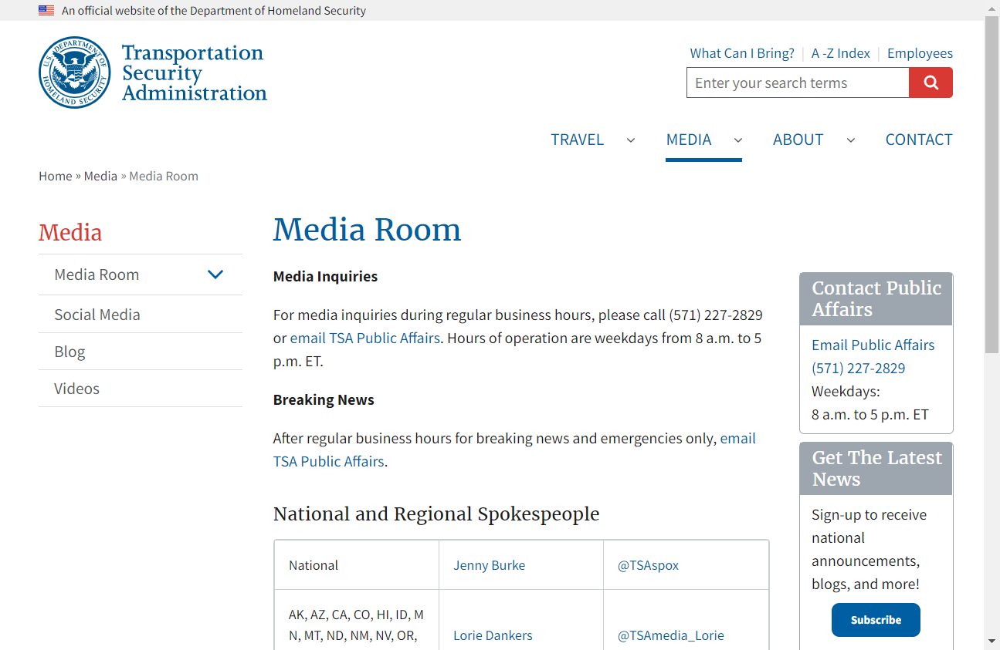
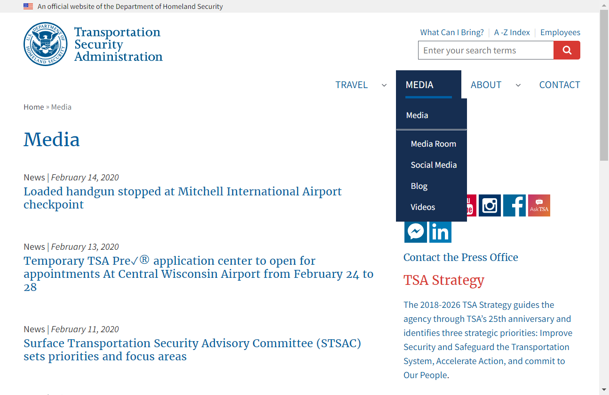
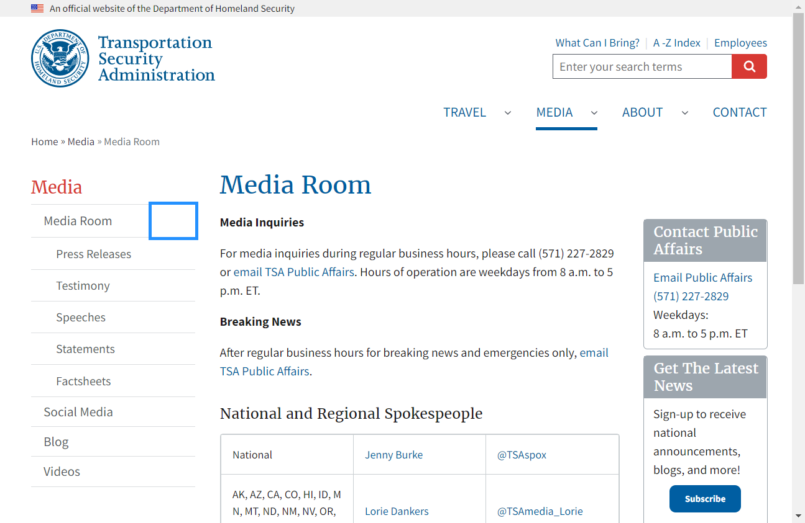

TSA.gov
Home
>
Media Section Regression Test
>
As user I want to access all pages under Media section
> Screenshots
Overall Test Results
Requirements
Report generated 26-02-2020 12:10
Media Section Regression Test
Feature
As user I want to access all pages under Media section
Scenario:
Given user wants to access all pages on Media section
When user access Media page
Then user is directed to Media page
And page <pageName> under Media section is accessible


 